Which of the following is not a limitation of Bohr’s theory? निम्नलिखित में से कौन बोर के सिद्धांांत की सीमा नहीं है?
AThe Zeeman effect ज़ीीमान प्रभाव
BSpectra of hydrogen and hydrogen-like atoms हाइड्रोोजन और हाइड्रोोजन जैसे परमाणुओं का स्पेक्ट्राा
CThe dual character of an electron एक इलेक्ट्रॉॉन का दोहरा चरित्र
DSpectra of multi-electron atoms बहु-इलेक्ट्रॉॉन परमाणुओं का स्पेक्ट्राा
EXPLANATIONCorrect Answer: B
The correct answer is B because it matches the definition: Spectra of hydrogen and hydrogen-like atoms हाइड्रोोजन और हाइड्रोोजन जैसे परमाणुओं का स्पेक्ट्राा .
Question 52ID: 2622773Page: 24
A[Image/Diagram]
B[Image/Diagram]
CThe probability of finding an electron in the space under consideration must be zero. विचाराधीन अंतरिक्ष में एक इलेक्ट्रॉॉन को खोजने की संभावना शून्य होनी चाहिए।
D[Image/Diagram]
EXPLANATIONCorrect Answer: D
The correct answer is D because it matches the definition: [Image/Diagram].
Question 53ID: 2622779Page: 25
Which of the following contains the conditions for a solvent to be suitable for dissolving ionic compounds? निम्नलिखित में से किसमें आयनिक यौगिकों को भंग करने के लिए विलायक के उपयुक्त होने की शर्तें हैं?
AHigh dipole moment and high dielectric constant उच्च द्विध्रुवीय क्षण और उच्च अचालक स्थिरांक
BHigh dipole moment and small dielectric constant उच्च द्विध्रुवीय क्षण और निम्न अचालक स्थिरांक
CLess dipole moment and small dielectric constant कम द्विध्रुवीय क्षण और निम्न अचालक स्थिरांक
DLess dipole moment and high dielectric constant कम द्विध्रुव आघूर्ण और उच्च परावैद्युतांक
EXPLANATIONCorrect Answer: A
The correct answer is A because it matches the definition: High dipole moment and high dielectric constant उच्च द्विध्रुवीय क्षण और उच्च अचालक स्थिरांक .
Question 54ID: 2622794Page: 25
To which of the following options, the (VSEPR) Valence Shell Electron Pair Repulsion theory cannot be applied to? निम्नलिखित में से किस विकल्प के लिए, (VSEPR) संयोजकता कोश इलेक्ट्रॉॉन युग्म प्रतिकर्षण सिद्धांांत लागू नहीं किया जा सकता है?
ADistinguish s, p, d, and forbitals. s, p, d और फोर्बिटल्स के बीच अंतर करें।
BPredict shapes of coordination compounds. समन्वय यौगिकों के आकार की पूर्व-सूचना देना।
CQuantify the extent of distortion in the molecules having irregular geometries. अनियमित ज्याामिति वाले अणुओं में विकृति की मात्राा निर्धारित करना
DIonic compounds. आयनिक यौगिक।
EXPLANATIONCorrect Answer: D
The correct answer is D because it matches the definition: Ionic compounds. आयनिक यौगिक। .
Question 55ID: 2622795Page: 26
Page: 26 Q.No: 55 2622795
A[Image/Diagram]
B[Image/Diagram]
C[Image/Diagram]
D[Image/Diagram]
EXPLANATIONCorrect Answer: B
The correct answer is B because it matches the definition: [Image/Diagram].
Question 56ID: 2622809Page: 26
Which of the following is represented by the given figure? निम्नलिखित में से कौन सा दिए गए चित्र द्वाारा दर्शाया गया है?
ANewmann projection of ethane ईथेन का न्यूमैन प्रक्षेपण
BSawhorse representation of methane मीथेन का साहोरसे प्रतिनिधित्व
CFischer representation of methane मीथेन का फिशर प्रतिनिधित्व
DSawhorse representation of ethane ईथेन का साहोरसे प्रतिनिधित्व
EXPLANATIONCorrect Answer: D
The correct answer is D because it matches the definition: Sawhorse representation of ethane ईथेन का साहोरसे प्रतिनिधित्व .
Question 57ID: 2622851Page: 27
Which of the following is NOT correct information regarding Friedel-Craft’s alkylation reaction? निम्नलिखित में से कौन सी फ्रीीडेल-क्रााफ्ट की एल्किलीकरण प्रतिक्रिया के बारे में सही जानकारी नहीं है?
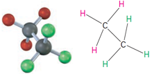
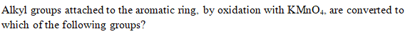
AAlkyl halides cannot be used. अल्कााइल हलाइड्स का उपयोग नहीं किया जा सकता है।
BAryl halides don’t react. ऐरिल हैलाइड्स प्रतिक्रिया नहीं करते।
C[Image/Diagram]
DOnly alkyl halides can be used. केवल अल्कााइल हलाइड्स का उपयोग किया जा सकता है।
EXPLANATIONCorrect Answer: A
The correct answer is A because it matches the definition: Alkyl halides cannot be used. अल्कााइल हलाइड्स का उपयोग नहीं किया जा सकता है। .
Question 58ID: 2622852Page: 27
ACarbonyl groups कार्बोनिल समूह
BHydroxyl groups हाइड्रॉॉक्सिल समूह
CAmino groups अमीनो समूह
DCarboxyl groups कार्बोक्सिल समूह
EXPLANATIONCorrect Answer: D
The correct answer is D because it matches the definition: Carboxyl groups कार्बोक्सिल समूह .
Question 59ID: 2622861Page: 28
Which of the following does not occur in the case of tertiary alkyl halides? तृतीयक ऐल्किल हैलाइडों के मामले में निम्नलिखित में से कौन सा नहीं होता है?
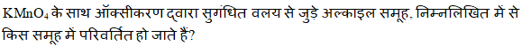
A[Image/Diagram]
BE1 elimination E1 उन्मूलन
C[Image/Diagram]
DE1cB elimination E1cB उन्मूलन
EXPLANATIONCorrect Answer: C
The correct answer is C because it matches the definition: [Image/Diagram].
Question 60ID: 2622876Page: 28
Which of the following reacts with benzaldehyde to form mandelonitrile? निम्नलिखित में से कौन बेन्जेल्डिहाइड के साथ अभिक्रिया कर मैंडेलोनिट्रााइल बनाता है?
The correct answer is D because it matches the definition: Hydrogen cyanide हाइड्रोोजन साइनाइड .
Question 61ID: 2622891Page: 29
What happens at the critical solution temperature for a system of partially miscible liquids? आंशिक रूप से मिश्रणीय तरल पदार्थों की प्रणाली के लिए महत्वपूर्ण समाधान तापमान पर क्याा होता है?
AThe liquids become completely immiscible. द्रव पूर्णतया अमिश्रणीय हो जाते हैं।
BThe liquids become completely miscible. द्रव पूर्णतया मिश्रणीय हो जाते हैं।
CThe amount of one liquid becomes more than the other in the system. सिस्टम में एक तरल की मात्राा दूसरे की तुलना में अधिक हो जाती है।
DThe mutual solubility is diminished. आपसी घुलनशीलता कम हो जाती है।
EXPLANATIONCorrect Answer: B
The correct answer is B because it matches the definition: The liquids become completely miscible. द्रव पूर्णतया मिश्रणीय हो जाते हैं। .
Question 62ID: 2622933Page: 29
Which of the following is a characteristic of amylopectin? निम्नलिखित में से कौन एमिलोपेक्टिन की विशेषता है?
AIt is soluble in water. यह पानी में घुलनशील है।
BIt gives a blue colour with iodine. यह आयोडीन के साथ नीला रंग देता है।
CIt gives a violet colour with iodine. यह आयोडीन के साथ बैंगनी रंग देता है।
DIt comprises 10-20% of starch. इसमें 10-20% स्टाार्च होता है।
EXPLANATIONCorrect Answer: C
The correct answer is C because it matches the definition: It gives a violet colour with iodine. यह आयोडीन के साथ बैंगनी रंग देता है। .
Question 63ID: 2622943Page: 30
An atom on the edge of a cube, contributes how many parts to each unit cell? एक घन के किनारे पर स्थित एक परमाणु, प्रत्येक एकक कोष्ठिका में कितने भागों का योगदान करता है?
AFully पूरी तरह से
BHalf आधा
COne-fourth एक चौथाई
DOne-eighth आठवां हिस्साा
EXPLANATIONCorrect Answer: C
The correct answer is C because it matches the definition: One-fourth एक चौथाई .
Question 64ID: 2622944Page: 30
What is the number of atoms per unit cell in a simple cubic structure? एक साधारण घनीय संरचना में प्रति एकक सेल में परमाणुओं की संख्याा कितनी होती है?
A4 4
B8 8
C6 6
D1 1
EXPLANATIONCorrect Answer: D
The correct answer is D because it matches the definition: 1 1 .
Question 65ID: 2622958Page: 31
Based on the concept of collision theory, which option is correct? संघटन सिद्धांांत की अवधारणा पर आधारित कौन सा विकल्प सही है?
AActivation energy = reacting molecules’ energy + threshold energy सक्रियण ऊर्जा = प्रतिक्रिया करने वाले अणुओं की ऊर्जा + प्रभाव ऊर्जा
BActivation energy = reacting molecules’ energy – threshold energy सक्रियण ऊर्जा = प्रतिक्रिया करने वाले अणुओं की ऊर्जा - प्रभाव ऊर्जा
CActivation energy - reacting molecules’ energy = threshold energy सक्रियण ऊर्जा - प्रतिक्रिया करने वाले अणुओं की ऊर्जा = प्रभाव ऊर्जा
DActivation energy + reacting molecules’ energy = threshold energy सक्रियण ऊर्जा + प्रतिक्रियाशील अणुओं की ऊर्जा = प्रभाव ऊर्जा
EXPLANATIONCorrect Answer: D
The correct answer is D because it matches the definition: Activation energy + reacting molecules’ energy = threshold energy सक्रियण ऊर्जा + प्रतिक्रियाशील अणुओं की ऊर्जा = प्रभाव ऊर्जा .
Question 66ID: 2622973Page: 31
Which of the following set of lanthanoid ions exhibits red colour? लैंथेनाइड आयनों का निम्नलिखित में से कौन सा समूह लाल रंग प्रदर्शित करता है?
A[Image/Diagram]
B[Image/Diagram]
C[Image/Diagram]
D[Image/Diagram]
EXPLANATIONCorrect Answer: D
The correct answer is D because it matches the definition: [Image/Diagram].
Question 67ID: 2623015Page: 32
Which of the following carries amino acids in an activated form to the ribosome for peptide-bond formation in a sequence dictated by the mRNA template? निम्नलिखित में से कौन एमआरएनए टेम्पलेट द्वाारा निर्धारित अनुक्रम में पेप्टााइड-बॉन्ड गठन के लिए राइबोसोम में सक्रिय रूप में अमीनो अम्ल ले जाता है?
ARibosomal RNA राइबोसोमल आरएनए
BTransfer RNA स्थानांतरण आरएनए
CMicro RNA माइक्रोो आरएनए
DMessenger RNA मैसेंजर आरएनए
EXPLANATIONCorrect Answer: B
The correct answer is B because it matches the definition: Transfer RNA स्थानांतरण आरएनए .
Question 68ID: 2623025Page: 32
Which of the following and phenol react to give condensation products and the reaction is always catalysed either by acids or bases? निम्नलिखित में से कौन सा और फिनोल संघनन उत्पााद देने के लिए प्रतिक्रिया करता है और प्रतिक्रिया हमेशा अम्ल या क्षाार द्वाारा उत्प्रेरित होती है?
AAlkenes ऐल्कीीन
BAlkanes ऐल्केेन
CAmines अमाइन
DAldehydes एल्डिहाइड
EXPLANATIONCorrect Answer: D
The correct answer is D because it matches the definition: Aldehydes एल्डिहाइड .
Question 69ID: 2623040Page: 32
What is the melting point of pure PETN, which is a white, crystalline solid? शुद्ध PETN का गलनांक क्याा है, जो एक सफेद, क्रिस्टलीय ठोस है?
A120 डिग्रीी सेल्सियस
B155 डिग्रीी सेल्सियस
C200 डिग्रीी सेल्सियस
D141.3 डिग्रीी सेल्सियस
EXPLANATIONCorrect Answer: D
The correct answer is D because it matches the definition: 141.3 डिग्रीी सेल्सियस .
Question 70ID: 2623041Page: 33
What is the other name of the propellants that are without any metals and have exhaust free of nucleating species, such as HCl? उन प्रणोदकों का दूसरा नाम क्याा है जो बिना किसी धातु के हैं और एचसीएल जैसे न्यूक्लियेटिंग प्रजातियों से मुक्त हैं?
AReduced smoke कम धुआं
BMinimum signature न्यूनतम हस्तााक्षर
CSmoky धुएँ
DMinimum smoke न्यूनतम धुआं
EXPLANATIONCorrect Answer: D
The correct answer is D because it matches the definition: Minimum smoke न्यूनतम धुआं .
Question 71ID: 2623055Page: 33
The first commercialized polyolefin was a low crystallinity, low density polyethylene. Where was it produced in 1939? पहला व्याावसायीकृत पॉलीओलेफ़िन एक कम क्रिस्टलीयता, कम घनत्व वाली पॉलीथीन थी। 1939 में इसका उत्पाादन कहाँ हुआ था?
ANew York न्यूयॉर्क
BSan Francisco सैन फ्रांांसिस्कोो
CIreland आयरलैंड
DEngland इंग्लैंड
EXPLANATIONCorrect Answer: D
The correct answer is D because it matches the definition: England इंग्लैंड .
Question 72ID: 2623097Page: 34
What happens to the mean free path of a molecule under the following conditions? निम्नलिखित परिस्थितियों में अणु के माध्य मुक्त पथ का क्याा होता है?
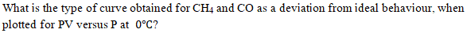
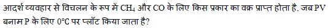
AIncreases with an increase in pressure. दबाव में वृद्धि के साथ बढ़ता है।
BIncreases with an increase in molecular collision rate. आणविक संघट्टन दर में वृद्धि के साथ बढ़ता है।
CDecreases with an increase in molecular collision rate. आणविक संघट्टन दर में वृद्धि के साथ घट जाती है।
DDecreases with an increase in temperature. तापमान में वृद्धि के साथ घटता है
EXPLANATIONCorrect Answer: C
The correct answer is C because it matches the definition: Decreases with an increase in molecular collision rate. आणविक संघट्टन दर में वृद्धि के साथ घट जाती है। .
Question 73ID: 2623107Page: 34
Page: 34 Q.No: 73 2623107
APV increases with pressure to a maximum value followed by a decrease. पीवी दबाव के साथ अधिकतम मान तक बढ़ता है और उसके बाद घटता है।
BPV decreases with pressure to a minimum value followed by an increase. पीवी एक न्यूनतम मूल्य के दबाव के साथ घटता है जिसके बाद वृद्धि होती है।
CPV increases continuously with pressure. पीवी दबाव के साथ लगातार बढ़ता है।
DPV decreases continuously with pressure. पीवी दबाव के साथ लगातार घट जाती है
EXPLANATIONCorrect Answer: B
The correct answer is B because it matches the definition: PV decreases with pressure to a minimum value followed by an increase. पीवी एक न्यूनतम मूल्य के दबाव के साथ घटता है जिसके बाद वृद्धि होती है। .
Question 74ID: 2623122Page: 35
Page: 35 Q.No: 74 2623122
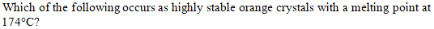
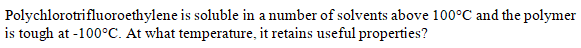
AMethyl Lithium मिथाइल लिथियम
BSodium Chloride सोडियम क्लोोराइड
CFerrocene फेरोसीन
DEthylene एथिलीन
EXPLANATIONCorrect Answer: C
The correct answer is C because it matches the definition: Ferrocene फेरोसीन .
Question 75ID: 2623137Page: 35
पॉलीक्लोोरोट्रिफ्लोोरोएथिलीन 100 डिग्रीी सेल्सियस से ऊपर कई सॉल्वैंट्स में घुलनशील है और पॉलिमर - 100 डिग्रीी सेल्सियस पर सख्त है। किस तापमान पर यह उपयोगी गुणों को बरकरार रखता है?
A90 डिग्रीी सेल्सियस
B30 डिग्रीी सेल्सियस
C150 डिग्रीी सेल्सियस
D200 डिग्रीी सेल्सियस
EXPLANATIONCorrect Answer: C
The correct answer is C because it matches the definition: 150 डिग्रीी सेल्सियस .
Question 51ID: 2622770Page: 113
What is the relationship between the wavelength and frequency of light? प्रकाश की तरंग दैर्ध्य और आवृत्ति के बीच क्याा संबंध है?
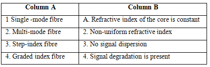
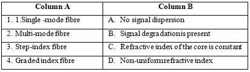
A[Image/Diagram]
B[Image/Diagram]
C[Image/Diagram]
D[Image/Diagram]
EXPLANATIONCorrect Answer: B
The correct answer is B because it matches the definition: [Image/Diagram].
Question 52ID: 2622780Page: 114
Why is the melting point of NaI lower than NaF? NaI का गलनांक NaF से कम क्योंों होता है?
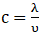
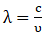
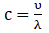
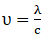
AThe ionic size is directly proportional to the attractive force. आयनिक आकार आकर्षक बल के सीधे आनुपातिक होता है।
BThe ionic size is inversely proportional to the attractive force. आयनिक आकार आकर्षक बल के व्युत्क्रमानुपाती होता है।
CThe attractive force is inversely proportional to the melting point. आकर्षण बल गलनांक के व्युत्क्रमानुपाती होता है।
DThe ionic size is directly proportional to the melting point. आयनिक आकार सीधे गलनांक के समानुपाती होता है।
EXPLANATIONCorrect Answer: B
The correct answer is B because it matches the definition: The ionic size is inversely proportional to the attractive force. आयनिक आकार आकर्षक बल के व्युत्क्रमानुपाती होता है। .
Question 53ID: 2622781Page: 115
Page: 115 Q.No: 53 2622781
AAn increase in the energy of the system प्रणाली की ऊर्जा में वृद्धि
BAn endothermic process एक एंडोथर्मिक प्रक्रिया
CAn exothermic process एक एक्ज़ोोथिर्मिक प्रक्रिया
DThe deformation of a solid एक ठोस की विकृति
EXPLANATIONCorrect Answer: C
The correct answer is C because it matches the definition: An exothermic process एक एक्ज़ोोथिर्मिक प्रक्रिया .
Question 54ID: 2622796Page: 115
Which two scientists, among the following have proposed the Molecular Orbital Theory? निम्नलिखित में से किन दो वैज्ञाानिकों ने आण्विक कक्षीीय सिद्धांांत प्रस्ताावित किया है?
ASidgwick and Powell सिडगविक और पॉवेल
BGillespie and Nyholm गिलेस्पीी और न्योोहोम
CBorn and Pauling बोर्न और पॉलिंग
DHund and Mulliken हुण्ड और मुल्लिकेन
EXPLANATIONCorrect Answer: D
The correct answer is D because it matches the definition: Hund and Mulliken हुण्ड और मुल्लिकेन .
Question 55ID: 2622797Page: 115
Which option carries one of the conditions for atomic orbitals to give rise to a stable molecular orbital? कौन सा विकल्प एक स्थिर आणविक कक्षीीय को जन्म देने के लिए परमाणु कक्षााओं के लिए शर्तों में से एक को वहन करता है?
ARelative energies of atomic orbitals must be close to each other. परमाणु कक्षााओं की सापेक्ष ऊर्जा एक दूसरे के करीब होनी चाहिए।
BThe charge clouds of atomic orbitals should not have a large extent of overlap. परमाणु ऑर्बिटल्स के चार्ज क्लााउड्स में ओवरलैप की एक बड़ीी सीमा नहीं होनी चाहिए।
CAtomic orbitals of different signs should overlap. विभिन्न चिन्होंों के परमाणु ऑर्बिटल्स ओवरलैप होने चाहिए।
DThe symmetry of atomic orbitals need not be close to each other. परमाणु कक्षााओं की समरूपता को एक दूसरे के करीब होने की आवश्यकता नहीं है।
EXPLANATIONCorrect Answer: A
The correct answer is A because it matches the definition: Relative energies of atomic orbitals must be close to each other. परमाणु कक्षााओं की सापेक्ष ऊर्जा एक दूसरे के करीब होनी चाहिए। .
Question 56ID: 2622810Page: 116
Which of the following gives correct information about the staggered conformation of ethane or any alkane? निम्नलिखित में से कौन इथेन या किसी अल्केेन के कंपित संरूपण के बारे में सही जानकारी देता है?
AAll the C-H bonds are as far away from each other as possible. सभी C-H बॉन्ड एक दूसरे से यथासंभव दूर होते हैं।
BAll the C-H bonds are as close to each other as possible. सभी C-H बॉन्ड एक दूसरे के जितना संभव हो उतना करीब होते हैं।
CIt is lower in energy. यह ऊर्जा में कम होते है।
DAbout 1% of the molecules are close to this conformation. लगभग 1% अणु इस रचना के करीब होते हैं।
EXPLANATIONCorrect Answer: A
The correct answer is A because it matches the definition: All the C-H bonds are as far away from each other as possible. सभी C-H बॉन्ड एक दूसरे से यथासंभव दूर होते हैं। .
Question 57ID: 2622853Page: 116
What is the correct order of reactivity of alcohols? अल्कोोहल की प्रतिक्रियाशीलता का सही क्रम क्याा है?
The correct answer is C because it matches the definition: Tertiary > Secondary > Primary > Methyl तृतीयक> माध्यमिक> प्रााथमिक> मिथाइल .
Question 58ID: 2622854Page: 117
Which of the following takes place during a nucleophilic substitution reaction? न्यूक्लियोफिलिक प्रतिस्थापन प्रतिक्रिया के दौरान निम्नलिखित में से कौन सा होता है?
AThe product is positively charged for a neutral nucleophile. उत्पााद को तटस्थ न्यूक्लियोफाइल के लिए सकारात्मक रूप से चार्ज किया जाता है।
BThe product is negatively charged for a positive nucleophile. सकारात्मक न्यूक्लियोफाइल के लिए उत्पााद को नकारात्मक रूप से चार्ज किया जाता है।
CThe product is neutral for a neutral nucleophile. उत्पााद तटस्थ न्यूक्लियोफाइल के लिए तटस्थ है।
DThe product is negatively charged for a neutral nucleophile. तटस्थ न्यूक्लियोफाइल के लिए उत्पााद को नकारात्मक रूप से चार्ज किया जाता है।
EXPLANATIONCorrect Answer: A
The correct answer is A because it matches the definition: The product is positively charged for a neutral nucleophile. उत्पााद को तटस्थ न्यूक्लियोफाइल के लिए सकारात्मक रूप से चार्ज किया जाता है। .
Question 59ID: 2622862Page: 117
The Williamson ether synthesis is which type of reaction? विलियमसन ईथर संश्लेषण किस प्रकार की प्रतिक्रिया है?
A[Image/Diagram]
B[Image/Diagram]
CE1 E1
DE1cB E1cB
EXPLANATIONCorrect Answer: B
The correct answer is B because it matches the definition: [Image/Diagram].
Question 60ID: 2622877Page: 118
With which of the following, benzaldehyde reacts and undergoes the Cannizzaro reaction due to the absence of an alpha-hydrogen atom? अल्फाा -हाइड्रोोजन परमाणु की अनुपस्थिति के कारण, निम्नलिखित में से किसके साथ बेंजाल्डिहाइड प्रतिक्रिया करता है और कैनिजेरो प्रतिक्रिया से गुजरता है?
ASodium hydroxide सोडियम हाइड्रॉॉक्सााइड
BSodium oxide सोडियम ऑक्सााइड
CSodium peroxide सोडियम पेरोक्सााइड
DSodium chloride सोडियम क्लोोराइड
EXPLANATIONCorrect Answer: A
The correct answer is A because it matches the definition: Sodium hydroxide सोडियम हाइड्रॉॉक्सााइड .
Question 61ID: 2622892Page: 118
Which of the following is a valid condition to conduct the steam distillation of liquids? तरल पदार्थों के भाप आसवन के संचालन के लिए निम्नलिखित में से कौन सी वैध स्थिति है?
A[Image/Diagram]
BThe immiscible liquids become solids if distilled ordinarily. साधारण रूप से आसवित करने पर अमिश्रणीय द्रव ठोस हो जाती हैं
CThe vapour pressure is less than the vapour pressure of either of the liquids. वाष्प दाब किसी भी द्रव के वाष्प दाब से कम हो जाती हैं
DThe boiling point is above the boiling points of the immiscible liquids. क्वथनांक अमिश्रणीय तरल पदार्थों के क्वथनांक से ऊपर होता है।
EXPLANATIONCorrect Answer: A
The correct answer is A because it matches the definition: [Image/Diagram].
Question 62ID: 2622934Page: 119
Digesting wood in a solution of sodium sulphide, sulphur and X is the sulphate process of preparing cellulose. Which is represented by “X”? सोडियम सल्फााइड, सल्फर और X के घोल में लकड़ीी को पचाना सेल्युलोज तैयार करने की सल्फेेट प्रक्रिया है। “X” द्वाारा किसका प्रतिनिधित्व किया जाता है?
ASodium hydroxide सोडियम हाइड्रॉॉक्सााइड
BSodium oxide सोडियम ऑक्सााइड
CSodium sulphate सोडियम सल्फ़ेेट
DSodium acetate नाजिया
EXPLANATIONCorrect Answer: A
The correct answer is A because it matches the definition: Sodium hydroxide सोडियम हाइड्रॉॉक्सााइड .
Question 63ID: 2622945Page: 119
What is the contribution of face atoms to the total number of atoms in a unit cell of a face-centred cubic structure? एक फलक केंद्रित घनीय संरचना की एक इकाई सेल में कुल परमाणुओं की संख्याा में फलक परमाणुओं का क्याा योगदान है?
A1 1
B2 2
C3 3
D4 4
EXPLANATIONCorrect Answer: C
The correct answer is C because it matches the definition: 3 3 .
Question 64ID: 2622946Page: 119
According to the law of constancy of interfacial angles, which option is true? अंतराफलकीय कोणों की स्थिरता के नियम के अनुसार, कौन सा विकल्प सत्य है?
AThe angles between adjacent faces vary according to the sizes of the crystal of the same substance. आसन्न चेहरों के बीच के कोण एक ही पदार्थ के क्रिस्टल के आकार के अनुसार भिन्न होते हैं।
BThe angles between adjacent faces vary according to the shapes of the crystal of the same substance. आसन्न चेहरों के बीच के कोण एक ही पदार्थ के क्रिस्टल के आकार के अनुसार भिन्न होते हैं।
CThe angles between adjacent faces remain the same despite the sizes and shapes of the crystal of the same substance. एक ही पदार्थ के क्रिस्टल के आकार और आकार के बावजूद आसन्न फलकों के बीच के कोण समान रहते हैं।
DThe shape of a crystal varies according to its interfacial angles. एक क्रिस्टल का आकार उसके इंटरफेसियल कोणों के अनुसार बदलता रहता है।
EXPLANATIONCorrect Answer: C
The correct answer is C because it matches the definition: The angles between adjacent faces remain the same despite the sizes and shapes of the crystal of the same substance. एक ही पदार्थ के क्रिस्टल के आकार और आकार के बावजूद आसन्न फलकों के बीच के कोण समान रहते हैं। .
Question 65ID: 2622959Page: 120
What is the effect of a catalyst on a reaction? किसी अभिक्रिया पर उत्प्रेरक का क्याा प्रभाव होता है?
AActivation energy is lowered सक्रियण ऊर्जा कम हो जाती है।
BActivation energy is increased सक्रियण ऊर्जा बढ़ जाती है।
CThe rate of reaction is lowered प्रतिक्रिया की दर कम हो जाती है।
DThe energy barrier is increased ऊर्जा अवरोध बढ़ता है।
EXPLANATIONCorrect Answer: A
The correct answer is A because it matches the definition: Activation energy is lowered सक्रियण ऊर्जा कम हो जाती है। .
Question 66ID: 2622974Page: 120
Which of the following lanthanoid ion does not contain unpaired electrons in the 4f orbital? निम्नलिखित में से किस लैंथेनाइड आयन में 4f कक्षीीय में अयुग्मित इलेक्ट्रॉॉन नहीं होते हैं?
A[Image/Diagram]
B[Image/Diagram]
C[Image/Diagram]
D[Image/Diagram]
EXPLANATIONCorrect Answer: A
The correct answer is A because it matches the definition: [Image/Diagram].
Question 67ID: 2623016Page: 121
Which of the following is made of silicon and gallium? निम्नलिखित में से कौन सा सिलिकॉन और गैलियम से बना है?
AFuel cells ईंधन सेल
BBattery cells बैटरी सेल
CSolar cells सौर सेल
DVacuum tubes वैक्यूम ट्यूब
EXPLANATIONCorrect Answer: C
The correct answer is C because it matches the definition: Solar cells सौर सेल .
Question 68ID: 2623026Page: 121
What is the emission of light in chemical reaction at ordinary temperatures known as? साधारण ताप पर रासायनिक अभिक्रिया में प्रकाश के उत्सर्जन को क्याा कहते हैं ?
ALuminescence लूमनेसन्स
BChemiluminescence रासायनिक संदीप्ति
CFluorescence प्रतिदीप्ति
DPhosphorescence स्फुुरदीप्ति
EXPLANATIONCorrect Answer: B
The correct answer is B because it matches the definition: Chemiluminescence रासायनिक संदीप्ति .
Question 69ID: 2623042Page: 122
Which of the following refers to fiber-reinforced engineering structural materials wherein the fibres are continuous or long enough so that they can be oriented to produce enhanced strength properties in one direction? निम्नलिखित में से कौन सा फाइबर-प्रबलित इंजीनियरिंंग संरचनात्मक सामग्रीी को संदर्भित करता है जिसमें फाइबर निरंतर या लंबे समय तक पर्याप्त होते हैं ताकि वे एक दिशा में बढ़ीी हुई शक्ति गुणों का उत्पाादन करने के लिए उन्मुख हो सकें?
APolymer blends पॉलिमर मिश्रण
BMonomer मोनोमर
CComposites सम्मिश्रण
DPVC पीवीसी
EXPLANATIONCorrect Answer: C
The correct answer is C because it matches the definition: Composites सम्मिश्रण .
Question 70ID: 2623043Page: 122
Which is a type of starch found in plants consisting of a linear combination of several thousand glucose units? पौधों में पाया जाने वाला एक प्रकार का स्टाार्च कौन सा है जिसमें कई हजार ग्लूकोज इकाइयों का एक रैखिक संयोजन होता है?
AFructose फ्रुुक्टोोज
BSucrose सुक्रोोज
CCellulose सेलूलोज़
DAmylose एमाइलोज
EXPLANATIONCorrect Answer: D
The correct answer is D because it matches the definition: Amylose एमाइलोज .
Question 71ID: 2623056Page: 123
It finds limited applications in adhesives and may be polymerised by free-radical emulsion or suspension polymerization. What is it? यह चिपकने में सीमित अनुप्रयोग पाता है और फ्रीी-रेडिकल इमल्शन या सस्पेंशन पोलीमराइज़ेशन द्वाारा पोलीमराइज़ किया जा सकता है। यह क्याा है?
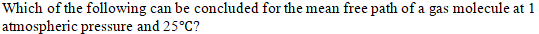
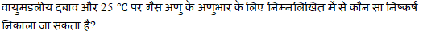
APoly vinyl chloride पॉली विनाइल क्लोोराइड
BPoly (vinyl acetate) पॉली (विनाइल एसीटेट)
CPolyamides पॉलियामाइड्स
DAcrylic polymers एक्रिलिक पॉलिमर
EXPLANATIONCorrect Answer: B
The correct answer is B because it matches the definition: Poly (vinyl acetate) पॉली (विनाइल एसीटेट) .
Question 72ID: 2623098Page: 123
Page: 123 Q.No: 72 2623098
AIt is large compared to macroscopic dimensions. यह मैक्रोोस्कोोपिक आयामों की तुलना में बड़ाा है
BIt is large compared to molecular dimensions. यह आणविक आयामों की तुलना में बड़ाा है
CIt is small compared to the average distance between molecules. यह अणुओं के बीच की औसत दूरी की तुलना में छोटा है
DIt is small compared to molecular dimensions. यह आणविक आयामों की तुलना में छोटा है
EXPLANATIONCorrect Answer: B
The correct answer is B because it matches the definition: It is large compared to molecular dimensions. यह आणविक आयामों की तुलना में बड़ाा है .
Question 73ID: 2623108Page: 124
Which of the following situations occur under high pressure or low temperature that indicate the deviation of real gases from ideal behaviour? निम्न में से कौन सी स्थिति उच्च दबाव या कम तापमान के तहत होती है जो आदर्श व्यवहार से वास्तविक गैसों के विचलन को दर्शाती है?
AThe intermolecular force of attraction or repulsion is negligible. आकर्षण या प्रतिकर्षण का अंतराण्विक बल नगण्य होता है।
BThe volume occupied by gas molecules is negligible. गैस के अणुओं द्वाारा घेरा गया आयतन नगण्य है।
CThe intermolecular force of attraction or repulsion is not negligible. आकर्षण या प्रतिकर्षण का अंतराअणुक बल नगण्य नहीं होता है।
DThe volume occupied by gas molecules is equal to the total volume of the gas. गैस के अणुओं द्वाारा घेरा गया आयतन गैस के कुल आयतन के बराबर होता है।
EXPLANATIONCorrect Answer: C
The correct answer is C because it matches the definition: The intermolecular force of attraction or repulsion is not negligible. आकर्षण या प्रतिकर्षण का अंतराअणुक बल नगण्य नहीं होता है। .
Question 74ID: 2623123Page: 124
Nickel tetra carbonyl on treatment with Sulphuric acid undergoes which of the following reactions, to form Nickel Sulphate? सल्फ्यूरिक एसिड के साथ उपचार पर निकेल टेट्राा कार्बोनिल, निकेल सल्फेेट बनाने के लिए निम्नलिखित में से किस प्रतिक्रिया से गुजरता है?
ASubstitution प्रतिस्थापन
BReduction रिडक्शन
COxidation ऑक्सीीकरण
DDecomposition अपघटन
EXPLANATIONCorrect Answer: C
The correct answer is C because it matches the definition: Oxidation ऑक्सीीकरण .
Question 75ID: 2623138Page: 124
Which type of reactions involve loss of two substituents from adjacent atoms, as a result of which, unsaturation is introduced? किस प्रकार की अभिक्रियाओं में आसन्न परमाणुओं से दो प्रतिस्थापियों की हानि होती है, जिसके परिणामस्वरूप असंतृप्ति उत्पन्न होती है?
AElimination एलिमिनेशन
BAddition अडीशन
CSubstitution प्रतिस्थापन
DElectrophilic इलेक्ट्रोोफिलिक
EXPLANATIONCorrect Answer: A
The correct answer is A because it matches the definition: Elimination एलिमिनेशन .